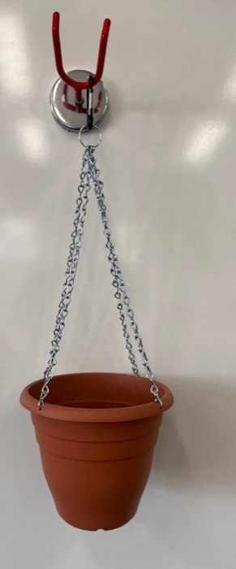
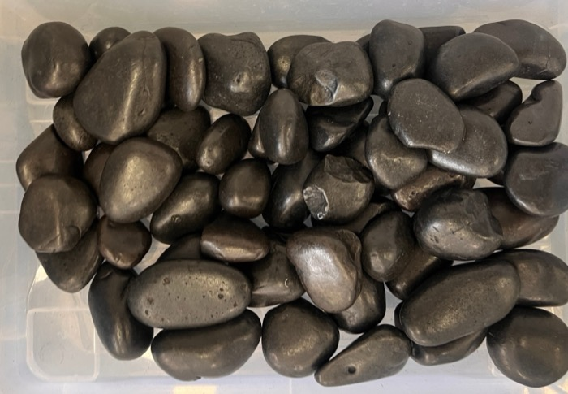

Year 1/2 STEAM | Unit: Stronger Together: Paper Makers | CRT plan | 45 minutes
Before the lesson (3 minutes). Find the hanging pot on the red magnet hook and the tub of rocks (photos below), and the class tray of last week's dried paper mache strips. Cut 3 plain strips from A4 paper, the same length and width as the paper mache strips. No screens are used.
This week you run the strength test as one whole class demonstration at the board: how many rocks the pot holds when it hangs from a plain strip, then from a paper mache strip. Students do not test in pairs. Then each student draws a labelled diagram of their carrier (a basket for a toy) in their STEAM journal. Journals are on the shelves as you walk in the door.
To design a paper carrier for a toy by choosing techniques that make paper stronger.
I can:
Read these aloud at the start and come back to them at the end. Today the class tests together, so for the first criterion students predict, count and watch.
| Item | How many | Used for |
|---|---|---|
| Hanging pot | 1 | The pot on three chains, hanging from the red magnet hook on the whiteboard (photo) |
| Tub of rocks | 1 | Adding weight to the pot, one rock at a time (photo) |
| Paper mache strips from Lesson 4 | 3 (from the class tray) | The strong strip, one per trial |
| Plain strips of A4 paper | 3, plus 1 spare | The plain strip, one per trial. Same length and width as the paper mache strips. |
| Sticky tape and scissors | 1 roll, 1 pair | Taping each strip into a loop (teacher only) |
| A cushion or folded jumper | 1 | On the floor under the pot, so it lands softly |
| A small toy | 1 | Showing what the carrier is for (any class toy, or a pencil case) |
| Pencils | 1 per student | Drawing the carrier |
| STEAM journals | 1 per student | Shelves by the door |


design, carrier, technique, layer, stronger, trial, handle, base
| Time | Step | What to do and say |
|---|---|---|
| 0 to 3 min | Settle | Students sit on the floor facing the whiteboard, at least two big steps back from the pot. Ask: "Last week, what did we make by mixing flour and water?" (Paste.) "What did we do with the paste?" (Stuck strips together in layers to make paper mache.) Read the Learning Intention and Success Criteria aloud. |
| 3 to 8 min | Predict | Hold up a plain strip and a paper mache strip. Say: "We will hang this pot from a strip of paper and fill it with rocks, one at a time, until the paper tears." Ask: "Which strip will hold more rocks?" Thumbs up for the plain strip, thumbs down for the paper mache strip. Ask two students why. (The paper mache is thicker; it has more layers; the paste sticks them together.) Draw the results table on the board. |
| 8 to 20 min | Test together | Hang the pot from a plain strip (see the steps above). Choose a helper to add rocks while the class counts aloud. When it tears, write the number in the table. Ask: "Do you think it will be the same number next time?" Do a second plain trial with a new helper. Then test a paper mache strip the same way, at least twice. Change helpers each trial. After each trial ask: "Was that more or fewer than the plain strip?" At the end ask: "What changed?" (The paste joined the layers so they work as one stronger strip.) "Why did we do it more than once?" (To check the result was not a fluke.) |
| 20 to 25 min | Show how to design | Write design, carrier and technique on the board and say what each means (a design is a plan for something we will make; a carrier holds and carries things, like a basket; a technique is a way of doing something, such as folding, twisting, weaving or paper mache). Hold up a toy and say: "Our job is to make a basket that will carry this toy. It must be strong, like the strip that held the most rocks." On the board, draw a basket from the side: a base, two sides and a handle. Add labels with arrows, for example "paper mache base, because it held the most rocks" and "twisted handle". Say aloud why each technique was chosen. |
| 25 to 40 min | Draw in journals | Helpers hand out journals and pencils. Students write the date and the title Design a Carrier, then draw their basket from the side with a base, sides and a handle, and label at least two techniques with arrows. Pencil first. If a student has already started a diagram, they finish and label that one. Roam with the questions below. |
| 40 to 45 min | Share | 3 or 4 students share their design using the sentence stem on the board. Come back to the Learning Intention and Success Criteria. Finish with the key idea (below). Journals onto the shelves by the door. |
| Rocks held | Trial 1 | Trial 2 | Trial 3 |
|---|---|---|---|
| Plain strip | |||
| Paper mache strip |
Basket labels: base, sides, handle, and an arrow to each technique (fold, twist, weave, paper mache).
Sentence stem: My basket will be strong because I used ______ for the ______.
| Who | What to do |
|---|---|
| Support | Lightly draw a base, sides and handle outline in the student's journal, so they only add the arrows and labels. Labels can be one word, or copied from the board. |
| Extension | Fast finishers copy the results table into their journal and write one sentence about which strip was stronger and why. They can add a second handle idea and say which would be stronger. |